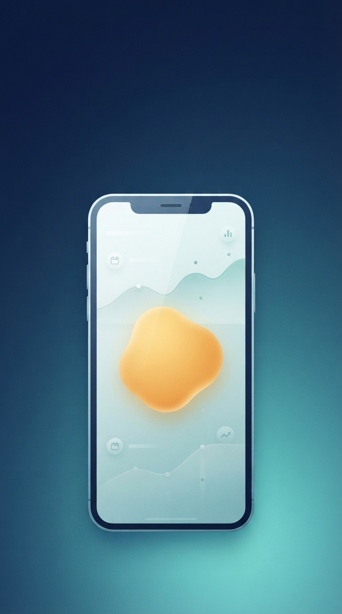
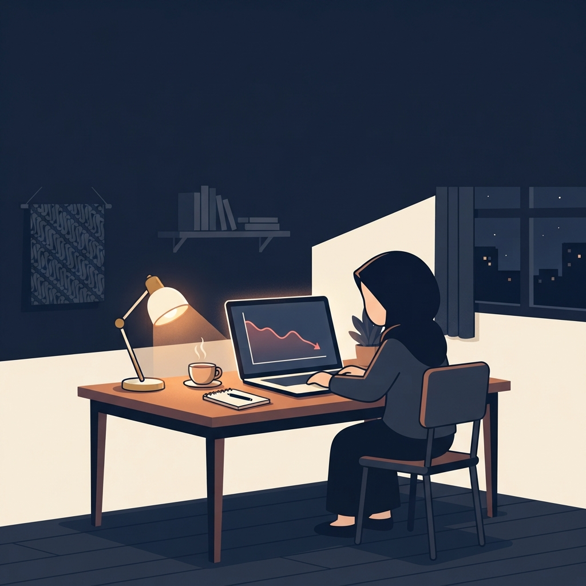
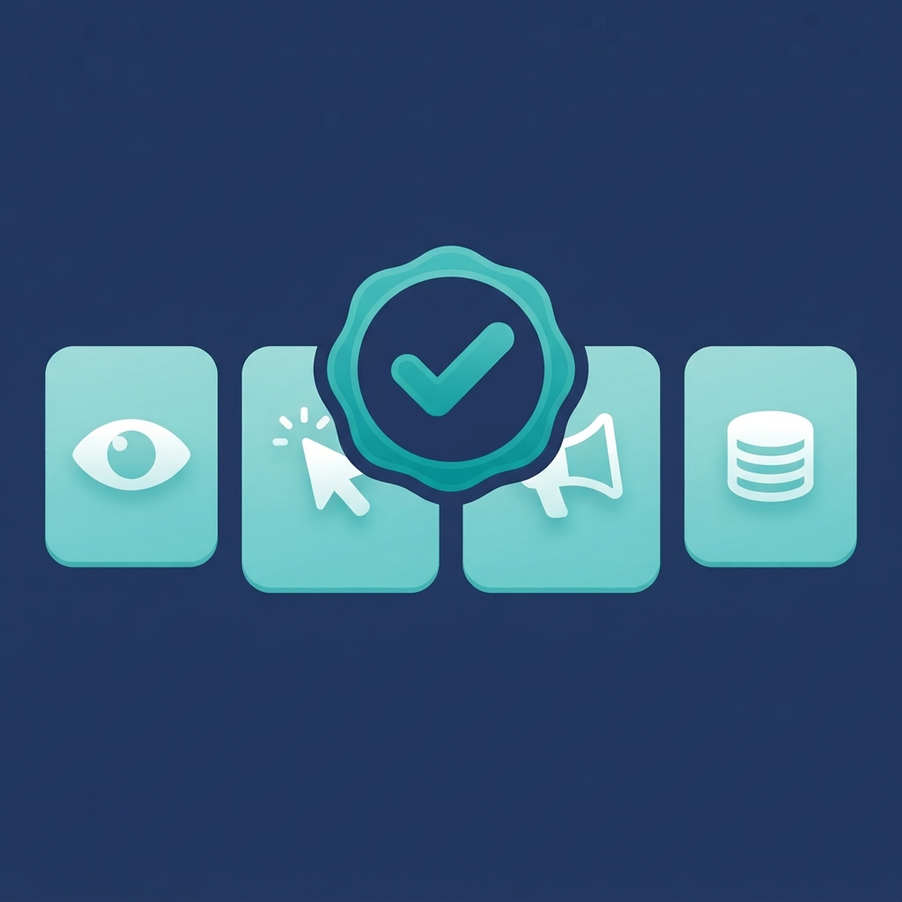

Radar Iklan Lelah membaca angka harian iklanmu sendiri, lalu memberi satu keputusan yang jelas: ganti kreatif, tahan, matikan, atau tunggu data. Lengkap dengan alasan dan tiga langkah untuk hari ini.


Umur iklan, target biaya per hasil, dan angka harian dari Ads Manager. Cukup 1 hari, bisa sampai 30 hari.
Periode terbaru dibandingkan dengan baseline dari data yang sama. Empat sinyal dibaca: frekuensi, CTR tautan, CPM, dan biaya per hasil.
Satu keputusan, alasannya, dan tiga langkah untuk hari ini. Bisa disimpan sebagai PDF.
Tidak ada satu angka yang berdiri sendiri. Frekuensi tinggi saja belum berarti iklanmu jenuh.

Kejenuhan hanya ditandai kalau dua sinyal memburuk 20 sampai 30 persen dan frekuensi ikut naik. Sebelum menyalahkan kreatif, app selalu mengingatkan untuk mengecek tracking dulu.
Cheat sheet satu halaman untuk membaca empat sinyal di Ads Manager, tanpa perlu menebak.
Tabel untuk mencatat lima angka tiap pagi. Cukup lima menit, dan langsung bisa dianalisa.
Checklist harian supaya kamu tidak gampang menyerah sebelum punya data yang cukup.
Akses ke Radar Iklan Lelah dan tiga bonus, langsung dikirim ke email setelah pembayaran.
Angka harian dari Ads Manager: frekuensi, CTR tautan, CPM, dan biaya per hasil. ROAS dipakai kalau kamu juga mengisi margin kotor.
Tidak. Cukup 1 hari, dan laporan tetap dibuat. Hasilnya akan lebih tajam kalau datanya makin panjang, sampai 30 hari.
Bisa. Pilih jenis audiens saat mengisi form, dan app menyesuaikan ambang yang dipakai.
Ya. Login memakai email yang dipakai saat membeli, lewat link masuk tanpa password.
Tidak. App hanya memberi analisa dan keputusan. Semua perubahan di akun Meta tetap kamu yang lakukan.
Tidak. Radar Iklan Lelah membantu membaca angkamu, bukan menjamin hasil iklan. Keputusan tetap di tanganmu.
Setiap akun punya jatah analisa harian. Kalau laporan gagal dibuat, tekan Coba Lagi. Kalau masih gagal, hubungi penjual di [isi kontak].